Overview
Creating anything physical requires different tools and components. The workspace usually gets messy and finding what you need gets painful. Add to the search agony the need to get up and set down 276 times every time you need anything. From here comes the idea of this project:)
About and Function
A holder that carries the components/tools needed for a one sitting. It is meant to house different sized tools and small components that, without boxes, can be lost.
Process of Design
Determine specifically what the project is expected to do, what functions it is expected to perform. For this project, it was the ability to house different tools without losing anything. From here came the idea of making a cube for small components, holes for screws and alikes, and the adjustable shelf for a wider variety of uses.
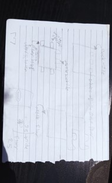Sketches are our greatest friends:")
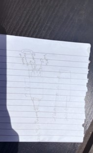 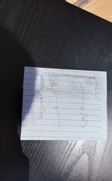 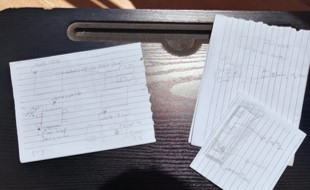General Tip
Trialing on paper is way easier than the CAD software when first-drafting. Pour your preliminary thoughts on paper with initials measurements to ease the upcoming steps. For an awful drawer like myself, I often find cutting paper to get as close as possible to a 3D actual design very helpful. Checkout these sketches for more elaboration.
Or you can make a cardboard to proof-concept before executing the design with the actual –typically more expensive- material.
Kerf Test
Now that we have a more solid visualization of the project, time to test the preliminary measure we assigned to each part. All the junctions used here are L joints; so next up is the kerf test.
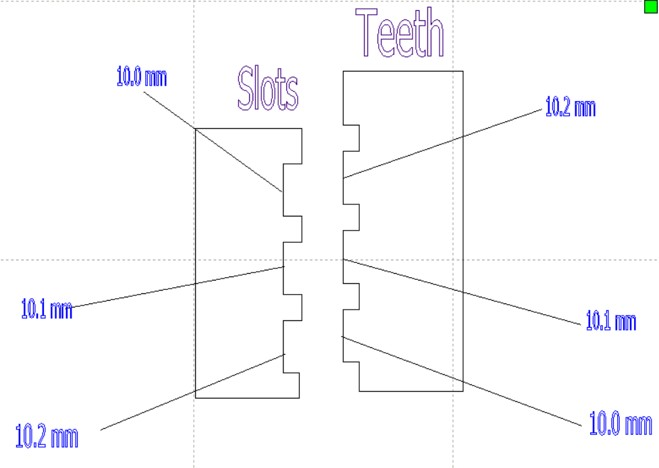 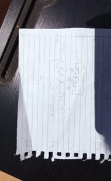After printing that design or something similar, we try different combinations to determine the most suitable width difference to adjust for the kerf. For this project “with a laser cutter and 3mm wood” the 10.2 tooth fitted with the 10.0 slot. 2mm width difference is taken into consideration when designing the junctions
Designing with SolidWorks
The software is pretty straightforward. You can check YouTube for amazing 2.5 minutes tutorials for any specific feature you want, that is how the entire project was made""
Find below the initials designs of this project for reference.
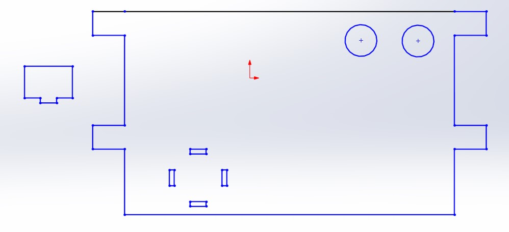 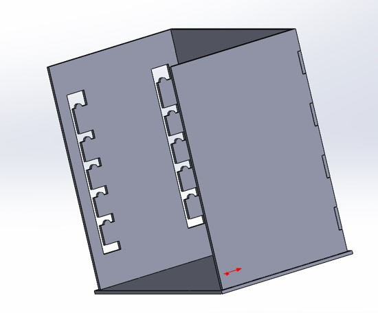 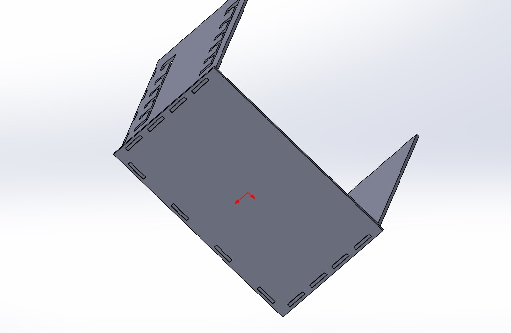Junctions and Slots
This was the original design of the side. With the slots that connect it to the base created wide from above where teeth are put then pushed down and to the right for higher friction and a stronger junction “after some thought I discovered that it has absolutely no practical benefit and removed it in test 2””
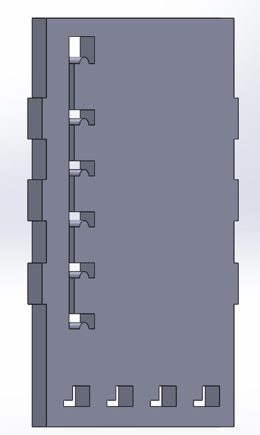 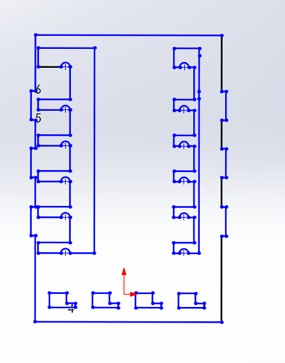Measurements of Test 1: moving floor
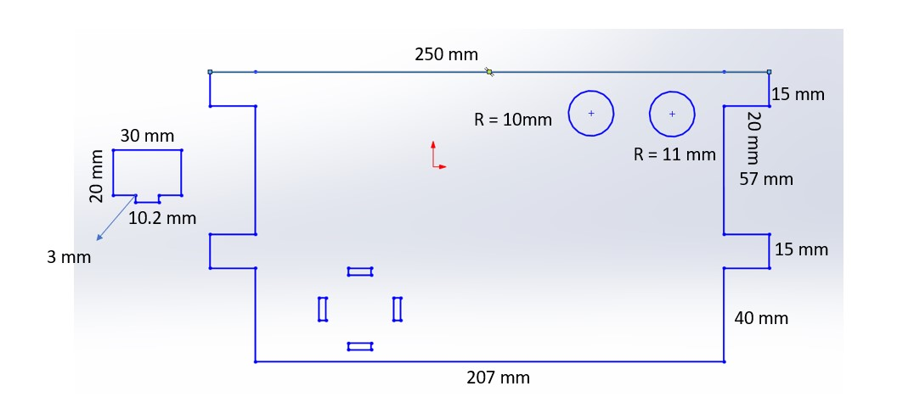Measurements of Test 1: backside
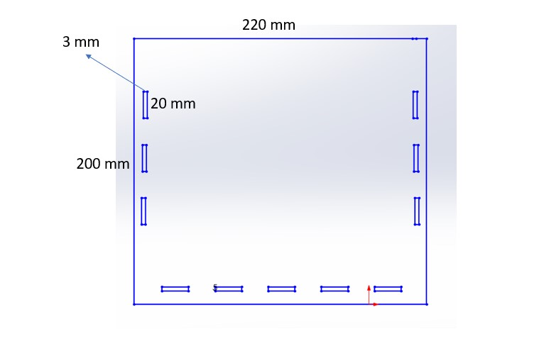Measurements of test 1: base
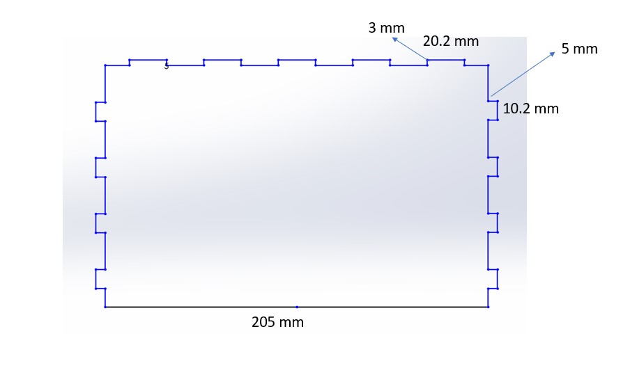Measurements of test 1: side
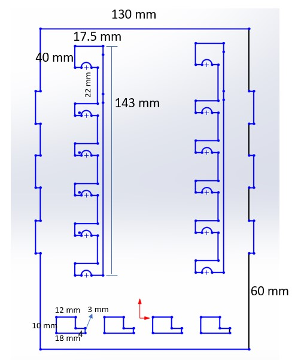Test 1 Results
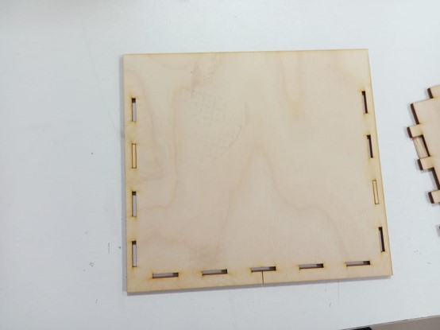 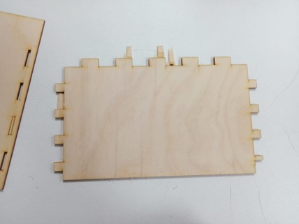After cutting the previously mentioned measurements, the parts did not fit much as planned. Find below a detailed illustration of different modifications.
Test 1 Adjustments: base
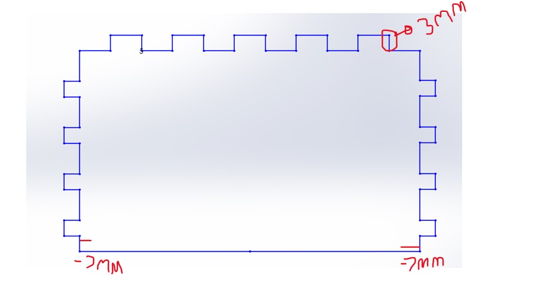Test 1 Adjustments: side
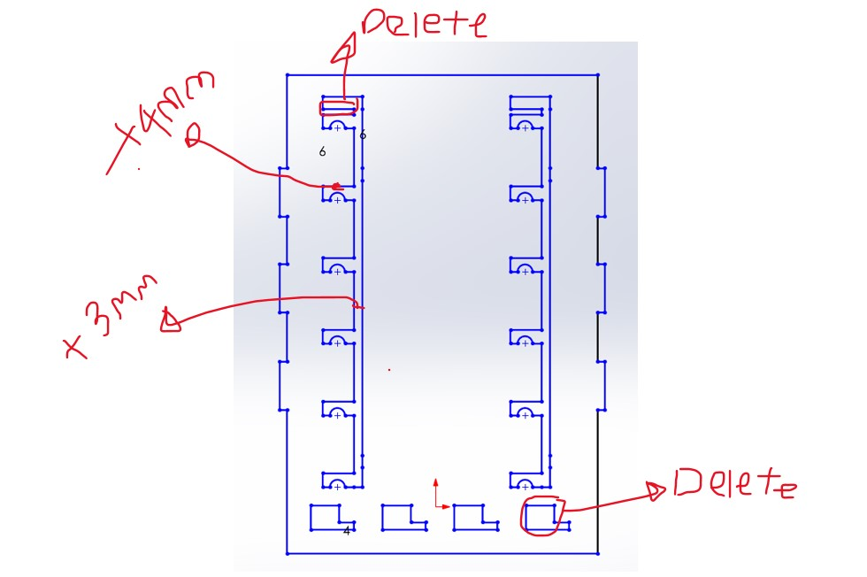Test 1 Adjustments: back
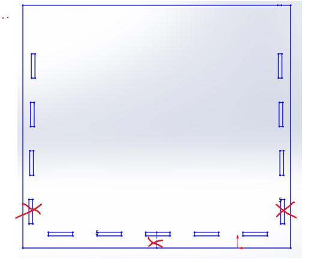Test 2 Design
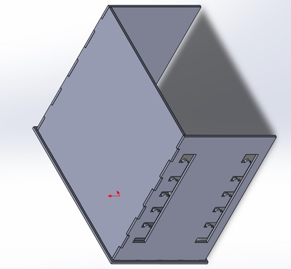
Cut and Paste
Cut and Paste
After getting done with solid works, export the files in ‘dxf’ format. Import the file to RDWorks and save it to Ufile from the bottom right corner
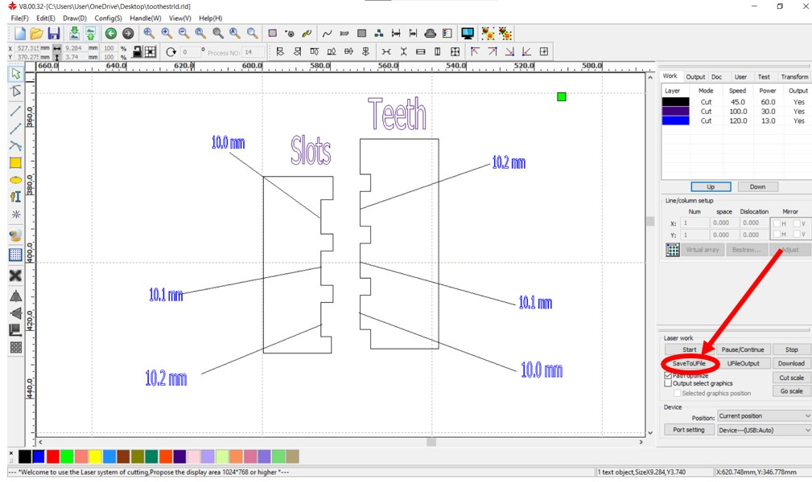Action Time!!
Take the .rd files now directly to the Laser cutter. Watch the magic happen “don’t watch closely tho or the laser will hurt your eyes” .
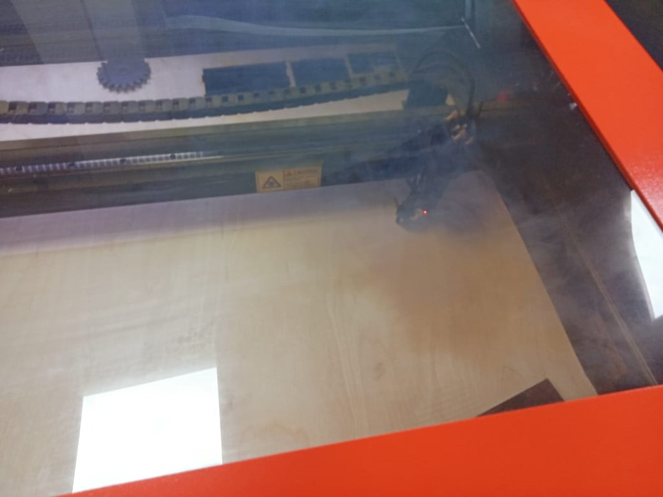Adrenaline Time>-<
Assembly is easy, just put parts together as originally planned. If the Kerf was adjusted properly, you are done here! If not, just use glue as illustrated below...
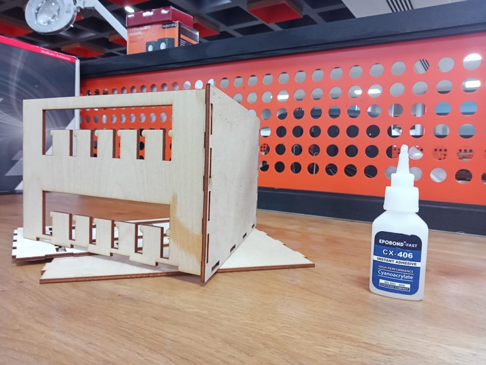Watch it at Work:)
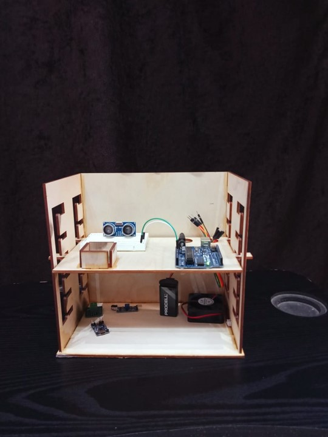 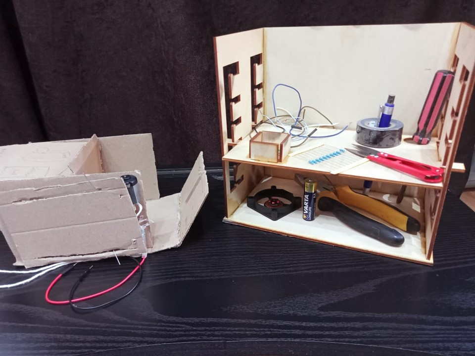 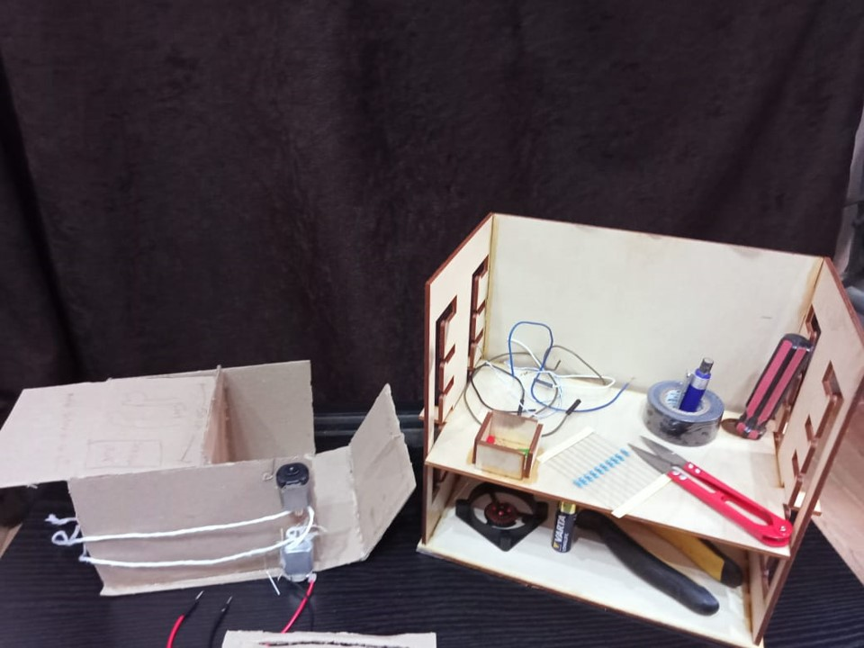 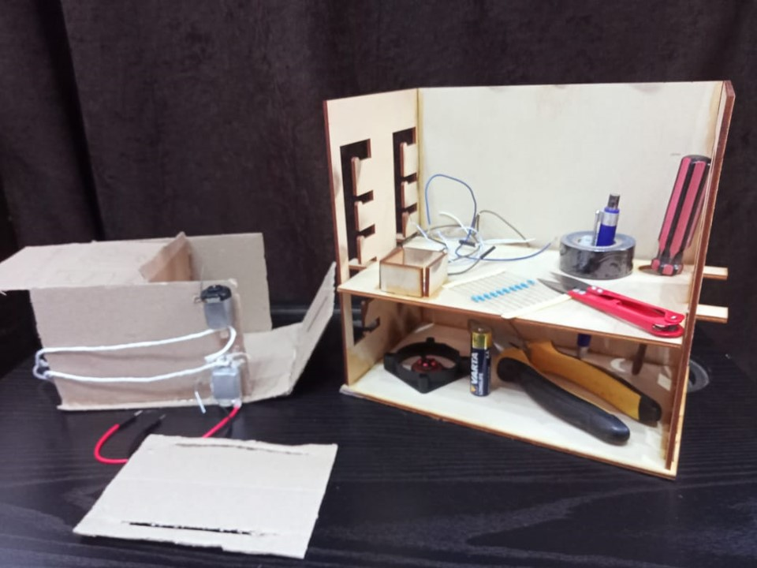General Notes
Assemble: before printing the design, gather all sides together in SolidWorks to ensure the fit factor is high and avoid simple mistakes.
Measure: take actual measurements before sketching so that the tool ends up on your desk instead of rubbish for unrealistic dimensions.
Machine specifications: for cuts in this project, the laser cutter parameters were set to 70 for power and 30 for speed. The numbers change tho depending on the constantly varying state of the machine; it is advised to test different combinations before printing your work. All the best:)
Check this out: You can find the source files of everything mentioned in this tutorial here.